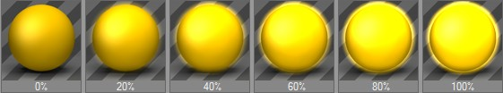
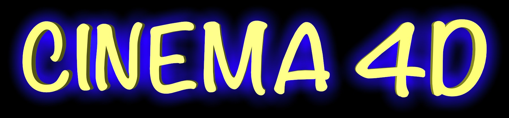
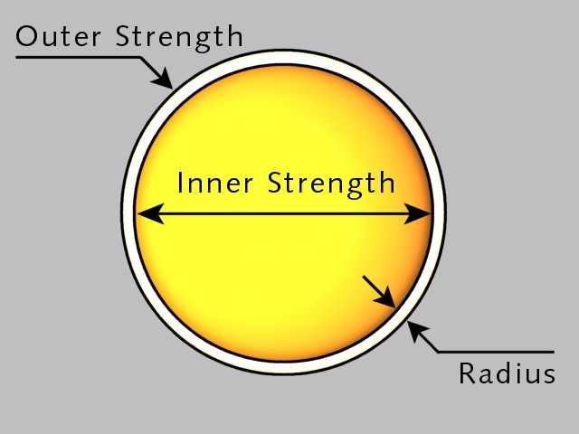

Function available in CINEMA 4D Prime, Visualize, Broadcast, Studio & BodyPaint 3D
辉光
图 1 。
该页可以创建柔和的辉光。
可以自由地设置辉光颜色。
辉光在透明对象和反射中都不可见，这里设置的辉光不具有灯光的属性，它不能照亮场景的其他部分，也不会产生任何投影。辉光最高的分辨率为 4,000 × 4,000 像素。

在大部分材质通道页面，可以使用取色器来选取颜色。
使用这项设置可以调整通道颜色的亮度。亮度的工作原理一定程度上类似一个乘数。
内部强度 [0..10000%]
外部强度 [0..10000%]
内部强度决定了覆盖在材质表面的辉光强度；外部强度是辉光外部边缘的强度（参见下面的图 1）。
半径决定了辉光（无论是内部还是外部）从表面扩展的距离。半径的渲染效果与对象跟摄像机的距离有关，对象距离越远，辉光就越小，反之亦然。
如果设置了随机百分比，在每个动画帧的辉光密度会在随机范围内波动：
0%：没有变化
100%：最大变化
频率指辉光半径变化的频率。变化的幅度由随机数值决定。
1Hz：辉光在 1 秒后变化达到新的随机值
25Hz：辉光每一帧都有一个新的数值（25 FPS），这会造成画面闪烁
如果使用材质颜色，辉光会根据材质颜色进行计算而不是这里指定的颜色。
如果不使用材质颜色，对象和辉光颜色会进行混合。例如绿色对象上的红色辉光会呈现出偏黄色的效果。